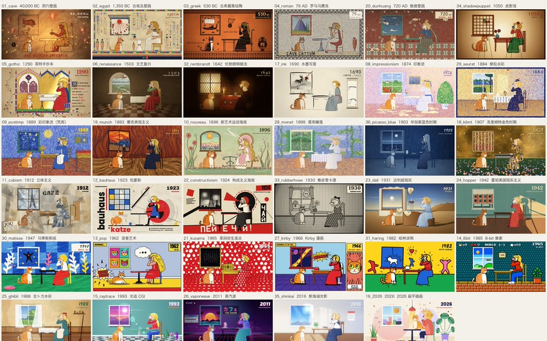
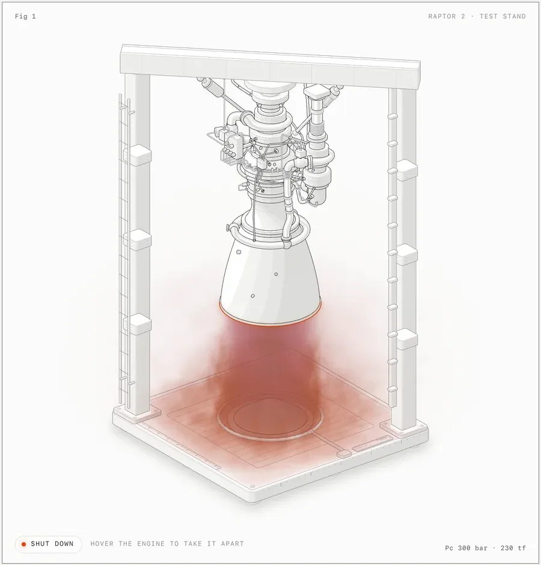
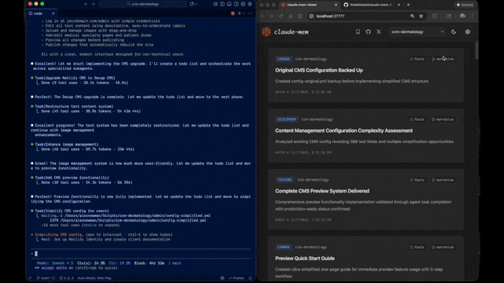
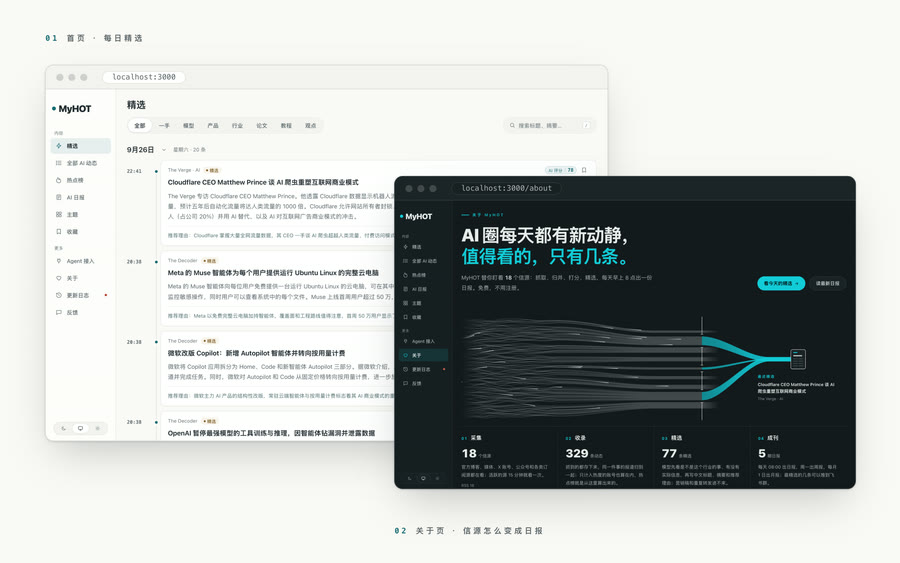
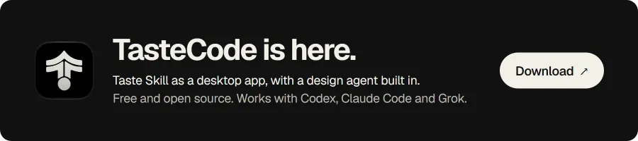

设计与前端
设计与前端UI/UX Pro Max
给 agent 装一套跨平台设计智能：配色、间距、组件规范都现成。做网页、App、小程序界面时先上它，产出不会一眼像模板。
 幻灯片与演示
幻灯片与演示PPT Master
把文档或一个主题变成真正能编辑的原生 PPTX——形状、转场、动画都在。甲方要 .pptx 原件、还要自己改的时候用它。
 图表与可视化
图表与可视化Diagram Design
38 种编辑级图表版式，输出自包含 HTML + SVG，没有阴影、没有 Mermaid 味。文章配图、文档插图、汇报图都合适。

视频与动效艺术动画 Art Motion
35 种艺术风格、9 种解说语法，用代码把静态内容做成会动的画。做科普片头、解说动画、风格化短片时用。
 插画与图像
插画与图像GPT Image 提示词库
530+ 案例、20+ 套工业级模板的提示词库，还有同提示词跨版本对比。抄的是结构不是图，出图稳定性提升明显。
中文去 AI 味
消除中文文本里 AI 生成痕迹的汉化版。稿子读起来像人写的，去掉那种工整、对仗、爱总结、动不动就升华的腔调。
MarkItDown
微软出的文件转 Markdown 工具：PDF、Word、PPT、Excel、图片都行。喂给模型之前的必备一步，比复制粘贴干净得多。
Agent Reach
给 agent 一副眼睛：读 Twitter、Reddit、YouTube、B 站、小红书，一个 CLI、零 API 费。做舆情和选题调研用。
Grill Me 拷问需求
工程师日常 skill 集里的招牌：连环提问把你的模糊想法逼成清晰方案，动手前先被拷问一遍。写代码前用它，返工少很多。
Anthropic 官方 Skills
官方 skill 仓库：docx、pdf、pptx、xlsx 等，也是 Agent Skills 标准的事实参考实现。想搞懂 skill 该怎么写就读它。
 商业与职场
商业与职场Career Ops 求职
求职 agent：扫招聘站、按你的 CV 给每个岗位打 1-5 分、筛掉不值得投的，再帮你改简历。海投效率翻倍。
 设计与前端
设计与前端DESIGN.md 品牌库
上百个知名产品拆解出的 DESIGN.md 设计规范。挑一份丢进项目，agent 就照着这套视觉语言做页面，不靠你反复描述风格。
 幻灯片与演示
幻灯片与演示Frontend Slides
用前端能力做网页幻灯片，翻页、滚动、动效都自由。适合线上分享、要嵌视频或交互的演示。

图表与可视化Anatomy 解剖插画
等距视角的机器与系统解剖插画，可加 WebGL 着色和 3D 效果。要讲清"这东西内部怎么转"时，比流程图有力。
SRT 白板动画
把字幕文件做成暖米黄纸张底的白板手绘动画，笔迹是流式书写而不是整段弹出。口播视频配画面用它最省事。
 插画与图像
插画与图像小黑怪诞配图
中文章节配图专用：16:9 白底手绘，少量红橙蓝批注，风格统一又带点怪。公众号长文拆分段落用。
Stop Slop 去 AI 味
删掉文章里的 AI 痕迹（英文写作）：模板腔、排比堆砌、空洞总结。英文内容定稿前过一遍。

知识与记忆Claude Mem 持久记忆
跨会话持久记忆：自动记录并压缩 agent 每次做过什么，下次开新会话能接上。长期项目不用反复交代背景。

情报与信息源AIHOT 热点站
自己找热点、自己写日报的网站框架。把信源和精选标准换成你的，就变成你所在行业的热点站。
Karpathy 编程准则
一份 CLAUDE.md，把 Karpathy 指出的 LLM 编程坑写成行为准则：少猜、多验证、别过度抽象。装了就少犯低级错。
宝玉 Skills
宝玉分享的 20+ 日常效率 skill（Claude Code / Codex 通用）。作者明确提醒：按需装，全装会给 agent 加冗余上下文。
商业诊断
dontbesilent 的商业诊断 skill：从商业模式、定价到增长卡点，给结构化的诊断结论而不是空话。接咨询或做方案前先用一轮。

设计与前端Taste 审美
先定艺术方向、找参考图，再用浏览器自检结果，而不是一上手就写通用模板页。适合对"好看"有要求但说不清要什么的场景。
归藏 PPT
HTML 幻灯片：杂志编辑风与瑞士网格两套排版，自带配图提示词和低功耗放映模式。想要设计感强的汇报 deck，又不想碰 PPT。